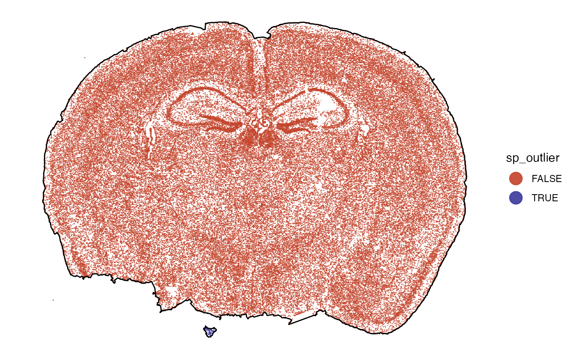
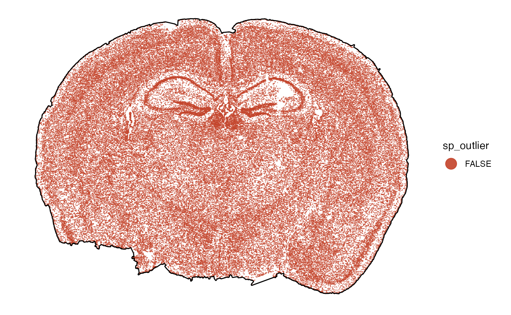
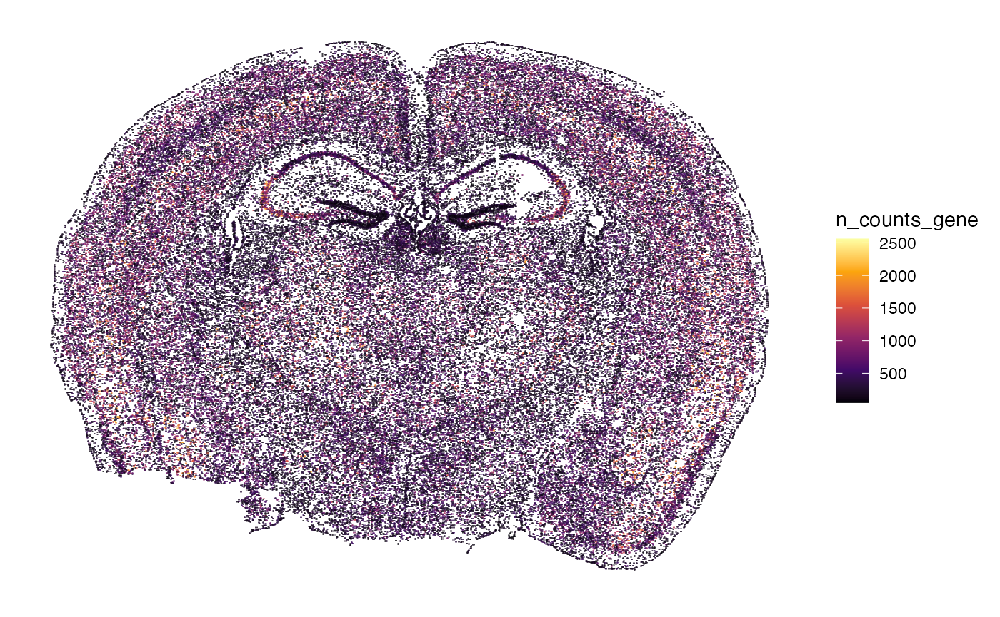
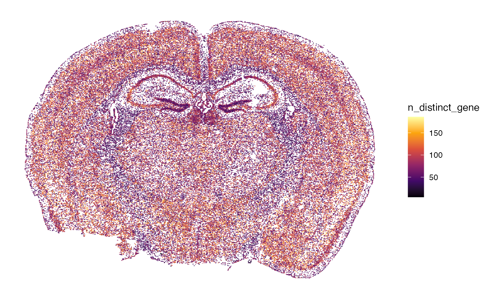
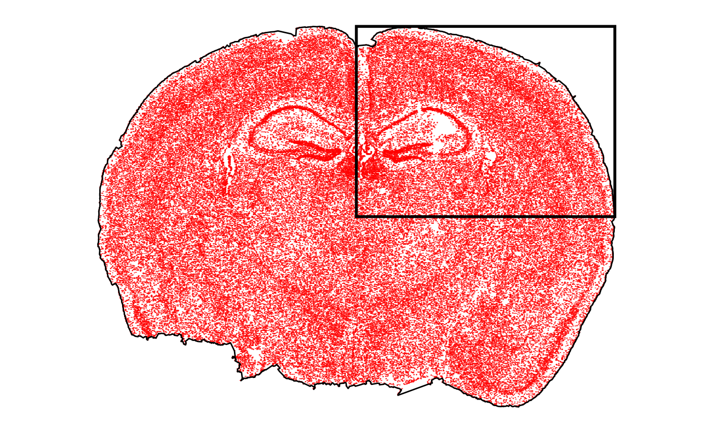
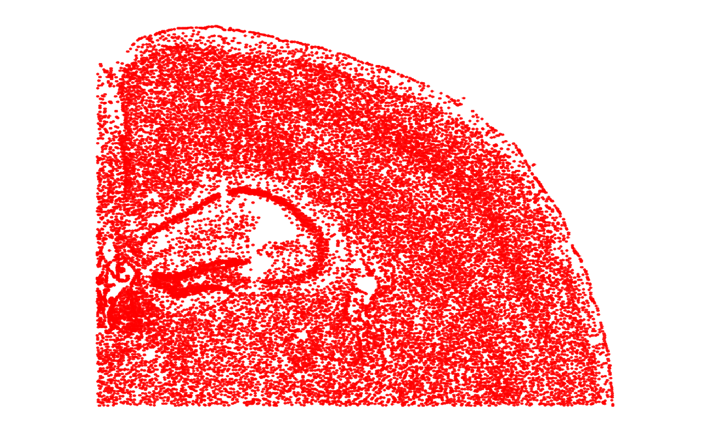

Initiation & Preprocessing: MERFISH
initiation-and-preprocessing-merfish.Rmd1. Introduction
This tutorial demonstrates how to load and preprocess MERFISH data in
SPATA2 using the initiateSpataObjectMERFISH() function. The
required files are a cell-by-gene matrix (cell_by_gene.csv) and
cell metadata (cell_metadata.csv) from the MERFISH output
folder. The function can be adjusted for custom files, see
?initiateSpataObjectMERFISH().
2. Load data
Here, we are using an exemplary mouse brain dataset from the Vizgen Data Release V1.0, Slice 2, Replicate 3, downloaded 08/2023. The dataset for this tutorial can be downloaded here.
library(SPATA2)
library(SPATAData)
library(ggplot2)
library(dplyr)
# initiate the object from a folder directory
object <-
initiateSpataObjectMERFISH(
directory_merfish = "data/tutorial_initiate_merfish", # adjust to your liking
sample_name = "Slice2_Replicate3"
)
# output object
object## An object of class SPATA2
## Sample: Slice2_Replicate3
## Size: 85958 x 649 (cells x molecules)
## Memory: 179.16 Mb
## Platform: MERFISH
## Molecular assays (1):
## 1. Assay
## Molecular modality: gene
## Distinct molecules: 649
## Matrices (1):
## -counts (active)
## Meta variables (3): sample, original_barcodes, tissue_sectionWe obtained a SPATA2 object with 85,958 cells and 649
genes. The count matrix looks as follows:
# extract count matrix
count_mtr <- getCountMatrix(object)
# show results
count_mtr[10:15,1:5]## 6 x 5 sparse Matrix of class "dgCMatrix"
## cell_1 cell_2 cell_3 cell_4 cell_5
## Htr5a . . . . .
## Htr5b . . . . .
## Htr6 . . . . .
## Htr7 . 1 . . .
## Adora1 . . . . .
## Adora2a . . . . .3. Spatial processing
First, we correct the slight tilt.
object <- rotateCoordinates(object, angle = 6)Next, we plot the tissue outline. This has been computed via
identifyTissueOutline() with default parameters within
initiateSpataObjectMERFISH(). If the results of your
objects are not satisfying adjust them and run the function again. Every
function call simply overwrites the results. In this case, the default
parameters worked out well and the tissue outline looks appropriate.
plotSurface(object, color_by = "tissue_section", pt_clrp = "milo") +
ggpLayerTissueOutline(object)
Seems as if there is a tiny fraction of cells that is not connected
to the main tissue section. We can identify and remove spatial outlier
separated from the contiguous tissue section with
identifySpatialOutliers(). Again, this function runs on
default parameters that can be adjusted. Refer to the documentation for
more information. In this case single outliers or collection of cells of
less than 5% of the overall number of cells (in this case, 4,297 cells)
are considered spatial outliers. Running the function creates a new
column sp_outlier which is added to the cell metadata.
# identify outliers based on the results of identifyTissueOutline()
object <- identifySpatialOutliers(object)## 01:08:10 Identifying spatial outliers.## 01:08:10 Spatial outliers: 95
# show the column
getCoordsDf(object, variables = "sp_outlier") %>%
dplyr::filter(sp_outlier == TRUE) %>%
dplyr::select(barcodes, sample, sp_outlier, everything())## # A tibble: 95 × 13
## barcodes sample sp_outlier x y x_orig y_orig fov volume min_x max_x
## <chr> <chr> <lgl> <dbl> <dbl> <dbl> <dbl> <dbl> <dbl> <dbl> <dbl>
## 1 cell_16… Slice… TRUE 1407. 6327. 1407. 6327. 98 1017. 1139. 1165.
## 2 cell_28… Slice… TRUE 727. 1085. 727. 1085. 124 1460. 1010. 1038.
## 3 cell_33… Slice… TRUE 4002. 499. 4002. 499. 648 297. 4335. 4349.
## 4 cell_33… Slice… TRUE 4033. 508. 4033. 508. 648 749. 4364. 4381.
## 5 cell_33… Slice… TRUE 4009. 533. 4009. 533. 648 1717. 4336. 4355.
## 6 cell_33… Slice… TRUE 4035. 435. 4035. 435. 649 1650. 4375. 4389.
## 7 cell_33… Slice… TRUE 4025. 481. 4025. 481. 649 439. 4362. 4372.
## 8 cell_33… Slice… TRUE 3982. 451. 3982. 451. 649 180. 4322. 4332.
## 9 cell_33… Slice… TRUE 4001. 459. 4001. 459. 649 720. 4340. 4351.
## 10 cell_33… Slice… TRUE 4006. 427. 4006. 427. 649 503. 4350. 4357.
## # ℹ 85 more rows
## # ℹ 2 more variables: min_y <dbl>, max_y <dbl>The results can be plotted with plotSurface().
# before
outline_with_outliers <- ggpLayerTissueOutline(object)
plot_with_outliers <-
plotSurface(object, color_by = "sp_outlier", pt_clrp = "milo")
# remove the outliers
# note that with spatial_proc = TRUE (default), a new tissue outline is computed
object <- removeSpatialOutliers(object, spatial_proc = TRUE)
# afterwards
plot_without_outliers <-
plotSurface(object, color_by = "sp_outlier", pt_clrp = "milo")
# left plot
plot_with_outliers +
outline_with_outliers # old outline
# right plot
plot_without_outliers +
ggpLayerTissueOutline(object) # new outline
4. Data preprocessing
The first processing step is usually to remove genes that were not
detected in any cell. As well as to remove cells with no counts at all.
The functions below check if any such scenario is the case and if so,
they remove what needs to be removed. Else, they simply return the input
object. In either case they give feedback as long
verbose = TRUE (the default).
#--- gene removal
nGenes(object)
## [1] 649
# remove genes with no counts - none existing
object <- removeGenesZeroCounts(object)
nGenes(object)
## [1] 649
#--- obs removal
nObs(object)
## [1] 85863
# remove observations with no counts - none existing
object <- removeObsZeroCounts(object)
nObs(object)
## [1] 85863Next, we normalize the count matrix. We normalize using SCT as
described in the Seurat
utorial. This processed the raw count matrix. Results are stored in
the respective assays. By default, the normalized matrix is activated
and thus used in downstream analysis. See ?activateMatrix
for more information. Furthermore, we compute metadata for the
cells:
# no processed matrices, only raw counts
getProcessedMatrixNames(object)
## character(0)
getMatrixNames(object)
## [1] "counts"
activeMatrix(object)
## [1] "counts"
# normalize raw count data
object <-
normalizeCounts(
object = object,
method = "SCT",
mtr_name_new = "SCT_data",
sct_clip_range = c(-10, 10)
)
# now the object contains normalized data
getProcessedMatrixNames(object)
## [1] "SCT_data"
activeMatrix(object)
## [1] "SCT_data"By default, the normalized matrix is activated and thus used in
downstream analysis. See ?activateMatrix for more
information. Furthermore, we compute metadata for the cells:
n_counts_{modality} with molecular modality gene
represents the number of individual transcript counts per cell, whereas
n_distinct_{modality} represents the number of distinct genes
identified by cell.
# some more meta features
object <- computeMetaFeatures(object)
# meta feauture names
getFeatureNames(object)
## character logical factor numeric
## "original_barcodes" "sp_outlier" "tissue_section" "n_counts_gene"
## integer numeric
## "n_distinct_gene" "avg_cpm_gene"
# show overview (compare to overview above)
show(object)
## An object of class SPATA2
## Sample: Slice2_Replicate3
## Size: 85863 x 649 (cells x molecules)
## Memory: 261.64 Mb
## Platform: MERFISH
## Molecular assays (1):
## 1. Assay
## Molecular modality: gene
## Distinct molecules: 649
## Matrices (2):
## -counts
## -SCT_data (active)
## Meta variables (7): sample, original_barcodes, sp_outlier, tissue_section, n_counts_gene, n_distinct_gene, avg_cpm_gene
# left plot
plotSurface(object, color_by = "n_counts_gene")
# right plot
plotSurface(object, color_by = "n_distinct_gene")
5. Spatially variable genes
Next, we identify spatially variable genes using SPARK-X.
# run the algorithm
object <- runSPARKX(object)
## ## ===== SPARK-X INPUT INFORMATION ====
## ## number of total samples: 85863
## ## number of total genes: 649
## ## Running with single core, may take some time
## ## Testing With Projection Kernel
## ## Testing With Gaussian Kernel 1
## ## Testing With Gaussian Kernel 2
## ## Testing With Gaussian Kernel 3
## ## Testing With Gaussian Kernel 4
## ## Testing With Gaussian Kernel 5
## ## Testing With Cosine Kernel 1
## ## Testing With Cosine Kernel 2
## ## Testing With Cosine Kernel 3
## ## Testing With Cosine Kernel 4
## ## Testing With Cosine Kernel 5
sparkx_genes <- getSparkxGenes(object, threshold_pval = 0.05)
str(sparkx_genes)
## chr [1:570] "Htr1f" "Htr2a" "Htr5a" "Htr5b" "Adora1" "Adora2a" "Adgrb1" ...
# left plot
plotSurface(object, color_by = sparkx_genes[1], pt_clrsp = "Purple-Blue") +
ggpLayerTissueOutline(object) # use outline to plot against white
# right plot (set the color scale limits)
plotSurface(object, color_by = sparkx_genes[2], pt_clrsp = "Reds 3", limits = c(0, 1.5), oob = scales::squish) +
ggpLayerTissueOutline(object)
6. Subset observations
For examples, we provide a small example object. Here, we additionally subset the dataset to just extract the top right corner.
# get range of upper right corner
crop_range <-
getCoordsRange(object) %>%
purrr::map(.f = ~ c(mean(.x), max(.x)))
# show results
crop_range
## $x
## [1] 5069.762 9639.579
##
## $y
## [1] 3732.895 7104.322
p_before <-
plotSurface(object, pt_clr = "red") +
ggpLayerTissueOutline(object) +
ggpLayerRect(object, xrange = crop_range$x, yrange = crop_range$y)
# crop with a rectangular
object_subset <- cropSpataObject(object, xrange = crop_range$x, yrange = crop_range$y)
p_subset <- plotSurface(object_subset, pt_clr = "red")
# left plot
p_before
# right plot
p_subset
7. Conclusion and more data sets
That’s it. The object can be used for any downstream analyses such as dimensional reduction, clustering, spatial annotation screening or spatial trajectory screening. Refer to tab Tutorials for more links. Furthermore, you can skim our curated data base of spatial data sets for those of platform MERFISH using SPATAData.
# load package
library(SPATAData)
# filter for samples from platform VisiumHD
sourceDataFrame(platform == "MERFISH")## # A tibble: 32 × 20
## sample_name donor_species institution lm_source organ organ_part
## <chr> <chr> <chr> <dttm> <chr> <chr>
## 1 HumanBreastCa… Homo sapiens Vizgen 2024-08-24 01:57:29 Brea… NA
## 2 HumanColonCan… Homo sapiens Vizgen 2024-08-24 01:57:29 Colon NA
## 3 HumanColonCan… Homo sapiens Vizgen 2024-08-24 01:57:29 Colon NA
## 4 HumanLiverCan… Homo sapiens Vizgen 2024-08-24 01:57:29 Liver NA
## 5 HumanLiverCan… Homo sapiens Vizgen 2024-08-24 01:57:29 Liver NA
## 6 HumanLungCanc… Homo sapiens Vizgen 2024-08-24 01:57:29 Lung NA
## 7 HumanLungCanc… Homo sapiens Vizgen 2024-08-24 01:57:29 Lung NA
## 8 HumanMelanoma… Homo sapiens Vizgen 2024-08-24 01:57:29 Skin NA
## 9 HumanMelanoma… Homo sapiens Vizgen 2024-08-24 01:57:29 Skin NA
## 10 HumanOvarianC… Homo sapiens Vizgen 2024-08-24 01:57:29 Ovary NA
## # ℹ 22 more rows
## # ℹ 14 more variables: pathology <chr>, platform <chr>, pub_citation <chr>,
## # source <chr>, web_link <chr>, mean_counts <dbl>, median_counts <dbl>,
## # modality_gene <lgl>, modality_metabolite <lgl>, modality_protein <lgl>,
## # n_obs <int>, n_tissue_sections <int>, obs_unit <chr>, obj_size <lbstr_by>